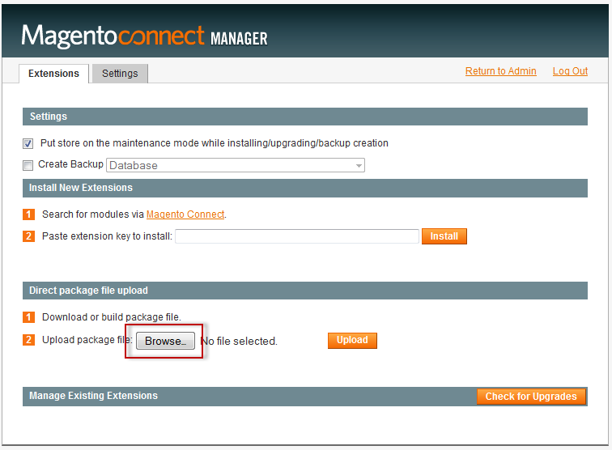
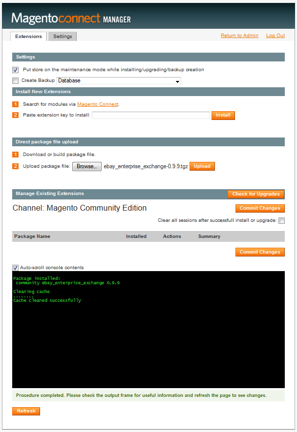
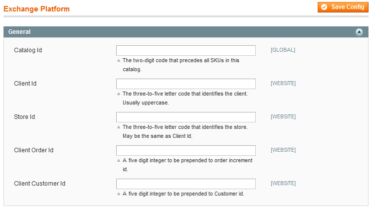

eBay Exchange Platform Installation and Administration Guide -- DRAFT, Do Not Distribute
Revision History
- Initial draft - 1/6/14
Contents
This guide contains the following information:
Overview
The eBay Enterprise Exchange Platform is a unique set of integrated omnichannel-enabling capabilities, services, and infrastructure. The platform provides tight orchestration across the entire technology value chain, spanning several key areas:
- Distributed Order Management
- Omnichannel Inventory Management
- Payment Processing and Fraud Management
- Reporting
- Platform-As-E-Service
Distributed Order Management
The eBay Enterprise Exchange Platform actively manages orders received from multiple brands, sites and retail interfaces; and optimizes their distribution.
Omnichannel Inventory Management
The platform's real-time inventory management capabilities enable you to optimize inventory levels, calculate inventory turnover, integrate with drop-shippers, and more.
Payment Processing and Fraud Management
- Payment Processing—Our simplified and highly secure capabilities use a high-volume processing engine to accept payments from the top global payment instruments.
- Fraud Management—We screen transactions to detect and prevent fraud before a shipment is made. The built-in fraud management system uses best-in-class analysis and data services to drive down fraud rates without impacting consumer experience. Suspicious orders are flagged and automatically routed to eBay Enterprise's order review team for investigation.
Reporting
The Exchange Platform comes with an integrated, robust reporting suite that enables you to run core reports, build new reports in WYSIWYG mode, preview them to ensure accuracy, and modify existing reports with little to no training. You can use dashboards to view order quantities, items and revenue as it occurs, and measure success of you promotions by revenue, fulfillment, and cost.
Integration Framework
The Exchange Platform uses a framework that streamlines data transmission and allows for fast track integration to the following:
- eBay Enterprise's Omnichannel Operations and Marketing Solutions suite
- eBay Inc. capabilities such as Magento, eBay Marketplaces and PayPal
- Third-party commerce ecosystem of other selling channels, demand generation channels, and supply chain systems and services.
Platform-As-E-Service
The Exchange Platform is delivered by a reliable, fast, and highly scalable on-demand infrastructure with 24/7 maintenance, support and proactive performance monitoring leveraging eBay Inc. infrastructure.
eBay Enterprise is compliant with the following:
- Payment Card Industry (PCI) Tier I
- Sarbanes Oxley
- SAS 70
Prerequisites
This section lists prerequisites for using the eBay Exchange Platform.
- The eBay Enterprise Exchange is compatible with Magento EE 1.13.1 and later.
If you're running an earlier version of EE, see Upgrading to and Verifying Magento Community Edition 1.8 and Enterprise Edition 1.13—Part 1. - You must have the following information from eBay Enterprise to start using the Exchange Platform:
- Catalog Id
- Client Id
- Store Id
- Client Order Id
- Client Customer Id
- API host name
- API key
- Secure FTP (SFTP) host name and port
- SFTP user name and private key
If you don't have all of this information, contact eBay Enterprise before continuing.
- Your system integrator must configure feeds to synchronize product attribute sets (among other things) with the eBay Enterprise cloud service. Refer to the eBay Exchange Platform Integration Guide for more information.
Contact your system integrator before continuing to be sure these tasks have already been performed.
Installing and Verifying the eBay Enterprise Exchange Platform
This section discusses how to install the eBay Enterprise Exchange using the Magento Connect Manager and how to verify the eBay Exchange Platform installed successfully.
Installing the eBay Exchange Platform
To install eBay Exchange Platform:
- Download the eBay Exchange Platform's .tgz file from the eBay Enterprise partner portal.
- Log in to the Magento Admin Panel as an administrator.
- Click System > Magento Connect > Magento Connect Manager.
- Log in to the Magento Connect Manager as an administrator.
- On the Extensions tab page, click Browse in the Direct package file upload section.
The following figure shows an example.
 - Browse to locate the eBay Exchange Platform's .tgz file.
- Click Upload.
A successful installation displays as follows:
 - If the eBay Exchange Platform installed successfully, secure the Magento file system as discussed in After You Install Magento: Recommended File System Ownership and Privileges.
The following error might display instead:
CONNECT ERROR: The 'community' channel is not installed. Please use the MAGE shell script to install the 'community' channel.
If the preceding error displays, use the following steps:
- Log in to the Magento server and open a command prompt window.
- Change to your Magento install directory (for example, /var/www/html/magento).
- Enter the following commands in the order shown:
chmod -R 777 . ./mage mage-setup .
The following messages display.
Running initial setup... Success Success Successfully added: http://connect20.magentocommerce.com/community
- Log out of the Magento Connect Manager.
- Log back in to the Magento Connect Manager as an administrator.
- Install the eBay Exchange Platform again.
Verifying the eBay Exchange Platform
To verify the eBay Exchange Platform installed successfully, log in to the Magento Admin Panel and look for configuration options under System > Configuration > EBAY ENTERPRISE as follows:
- Log in to the Magento Admin Panel as an administrator.
- Click System > Configuration.
- In the left navigation bar, look for EBAY ENTERPRISE between SALES and SERVICES.
- Click EBAY ENTERPRISE > Exchange Platform.
The following figure shows the options that display in the right pane.

If these options do not display, try the following:
- Flush the Magento cache:
- In the Admin Panel, click System > Cache Management.
- Click Flush Magento Cache at the top of the page.
- Log out of the Admin Panel and log back in.
- If the preceding options do not display, install the eBay Exchange Platform again.
Changes Made by the eBay Exchange Platform
The eBay Exchange Platform changes the following in the Admin Panel and your storefront:
Changes to the Admin Panel
- Product details (Catalog > Manage Products):
- General tab page:
- Added Is Drop Shipped list
- Added fields Drop Ship Supplier Name, Drop Ship Supplier Number, Drop Ship Supplier Part Number, Brand Name, Size, Buyer Name, Hazardous Material Code, Brand Description, eBay Enterprise Item Type, Style Id, Unresolved Product Links
- Added Is Clean list
- Prices tab page, added Is VAT inclusive list
- Added a Price tab page with a Tax Code field
- General tab page:
- Removed the Customers > Gift Card Accounts option
- Removed the ability to use the following role resources for any Magento role other than Administrator:
- Orders > Actions > Hold
- Orders > Actions > Credit Memos
- Orders > Actions > Unhold
- Orders > Actions > Ship
- Orders > Actions > Send Sales Emails
- Orders > Actions > Comment
- Orders > Actions > Invoice
- Orders > Actions > Capture
- Orders > Actions > Send Order Email
- Orders > Actions > Edit
- Orders > Actions > Accept or Deny Payment
- Orders > Actions > Cancel
- Orders > Actions > Create > Can Spend Reward Points
- RMA
- Transactions
- Recurring Profiles
- Billing Agreements
- Tax
- Customers > Manage Customers > Reward Points Balances
- Customers > Reward Exchange Rates
 Note: The preceding role resources are available but choosing them has no effect.
Note: The preceding role resources are available but choosing them has no effect. - If you enable transactional e-mails as discussed in TBD, Magento does not send the following transactional e-mails:
- Credit Memo Update
- Credit Memo Update for Guest
- Invoice Update
- Invoice Update for Guest
- New Credit Memo
- New Credit Memo for Guest
- New Invoice
- New Invoice for Guest
- New Order
- New Order for Guest
- New RMA
- New RMA for Guest
- New Shipment
- New Shipment for Guest
- Order Update
- Order Update for Guest
- Payment Failed
- Shipment Update
- Shipment Update for Guest
- System > Configuration changes:
- Removed SALES > Tax
- Added EBAY ENTERPRISE option
Changes to the Storefront
Reviewer: Cannot add anything to my cart so I don't know what has changed.
Initially Configuring the eBay Exchange Platform
This section discusses configuration tasks you must perform to enable the eBay Exchange Platform to communicate with the eBay Enterprise services and start synchronizing data.
Complete the tasks discussed in the following sections in the order in which they are presented:
- Configuring General Options
- Configuring Web Services
- Configuring Batch Feeds
- Configuring Logging Options
Configuring General Options
To configure general options:
- Log in to the Magento Admin Panel as an administrator.
- Click System > Configuration > EBAY ENTERPRISE > Exchange Platform.
- In the right pane, click General to expand it.
The following figure shows an example.
 - Enter the information you received from eBay Enterprise. Do not enter values you make up because you can conflict with other users.
Contact eBay Enterprise to get any missing values. - At the top of the page, click Save Config.
Configuring Web Services
Your Magento server communicates with eBay Enterprise using web services to retrieve updates to products, including inventory.
To configure web services:
- Log in to the Magento Admin Panel as an administrator.
- Click System > Configuration > EBAY ENTERPRISE > Exchange Platform.
- To change the scope of your settings, from the Current Configuration Scope list on the left, click the appropriate option. For example, to configure options for store view scope, click the name of a store view.
- In the right pane, click the Web Services tab to expand it.
- Enter or edit the following information:
Field Description API Hostname Enter the information you received from eBay Enterprise. Do not enter values you make up because you can conflict with other users.
Contact eBay Enterprise to get any missing values.API Key Enter the information you received from eBay Enterprise. Do not enter values you make up because you can conflict with other users.
Contact eBay Enterprise to get any missing values.API Timeout Enter the length of time, in milliseconds, to wait for a connection to eBay Enterprise to succeed before the connection drops. If the connection timeout is exceeded: - The connection drops
- The user action proceeds without the service that timed out.
For example, if address validation takes too long, the address isn't validated. - If the entire order submission takes too long, all metadata is saved locally and submitted to eBay Enterprise at a later time.
- At the top of the page, click Save Config.
Configuring Batch Feeds
Your Magento instance periodically retrieves updates to batch feed XML files stored on the eBay Enterprise cloud service using the Secure File Transfer Protocol (SFTP).
To configure SFTP:
- Log in to the Magento Admin Panel as an administrator.
- Click System > Configuration > EBAY ENTERPRISE > Exchange Platform.
- To change the scope of your settings, from the Current Configuration Scope list on the left, click the appropriate option. For example, to configure options for store view scope, click the name of a store view.
- In the right pane, click the Batch Feeds tab to expand it.
- Enter or edit the following information:
Field Scope Description Connection Attempt Limit Global Enter the number of times to retry a connection before the connection fails. Connection Retry Timer Global Enter the number of seconds to wait after a failed connection attempt before retrying the connection again.
If the connection attempt limit passes without a successful connection, the eBay Exchange Platform makes another connection attempt. If the connection attempt limit is exceeded, errors are logged and the connection is attempted again the next time the eBay Enterprise Exchange cron job runs.
The cron job is discussed in link-to Integrator's Guide (TBD).SFTP User Name Website Enter the user name to log in to the secure FTP (SFTP) server from which to retrieve feeds. Your user name is case-sensitive. Upload Private Key Website Click Browse to locate and upload the private key to use to connect to the SFTP server. Remote Host Website Enter the fully qualified host name of the eBay Enterprise SFTP batch feed server. Remote Port Website Enter the SFTP server's listen port. - At the top of the page, click Save Config.
Configuring Logging Options
This section discusses how to set options to log errors and exceptions to the magento-install-dir/var/log directory. During development, you should consider using more verbose logging but in a production environment, you should set logging to less verbose to prevent logs from consuming system resources and disk space.
To set logging options:
- Log in to the Magento Admin Panel as an administrator.
- Click System > Configuration > ADVANCED > Developer.
- To change the scope of your settings, from the Current Configuration Scope list on the left, click the appropriate option. For example, to configure options for store view scope, click the name of a store view.
- In the right pane, click the Log Settings tab to expand it.
- Enter or edit the following information:
Field Scope Description Enabled Store View Click Yes to enable logging. The default setting is No. System Log File Name Store View Enter the name of the file to which to log system messages. System messages do not include exceptions. Exceptions Log File Name Store View Enter the user name to log in to the secure FTP (SFTP) server from which to retrieve feeds. Your user name is case-sensitive. Admin Log Level Store View From the list, click the desired log level. Log levels display in the list in order from least verbose (EMERG) to most verbose (DEBUG). The default setting is INFO. Enabled Email Logging Store View From the list, click Yes to send log messages to one or more e-mail addresses. The default setting is No. Logging Email Address Store View Enter one or more e-mail addresses (either comma-separated or semicolon-separated) to which to send log e-mails. This setting is valid only if you chose to enable e-mail logging with the preceding option. Email Logging Level Store View From the list, click the desired log level. Log levels display in the list in order from least verbose (EMERG) to most verbose (DEBUG). The default setting is CRIT. - At the top of the page, click Save Config.
Administering the eBay Exchange Platform
This section discusses how to configure and use the following eBay Exchange Platform features:
Administering Transactional Email Handling
eBay Exchange Platform adds the ability to send the following types of automated transactional e-mails:
- Order confirmation e-mail after order payment is authorized and has passed the fraud check.
- Order cancellation e-mail.
- Shipment confirmation e-mail when the purchased products are shipped.
- Donation e-mail to confirm the donation amount and thank a customer.
- Credit issued e-mail for a price adjustment. This e-mail is sent to confirm the amount of the store credit for a customer if a customer receives an incomplete order, for example.
- Backorder notifications that inform the customer:
- That a product that is out of stock
- When a product is expected to be in stock
- About the conditions of the backorder
- Partial order cancellation.
These e-mails are referred to as transactional because they are generated by order activity, as opposed to marketing e-mails, such as promotions and so on.
eBay Enterprise Exchange eliminates the following types of automated e-mails:
- Credit Memo Update
- Credit Memo Update for Guest
- Invoice Update
- Invoice Update for Guest
- New Credit Memo
- New Credit Memo for Guest
- New Invoice
- New Invoice for Guest
- New Order
- New Order for Guest
- New RMA
- New RMA for Guest
- New Shipment
- New Shipment for Guest
- Order Update
- Order Update for Guest
- Payment Failed
- Shipment Update
- Shipment Update for Guest
Configuring Transactional Email Handling
To configure transactional email handling:
- Log in to the Magento Admin Panel as an administrator.
- Click System > Configuration > EBAY ENTERPRISE > Exchange Platform.
- To change the scope of your settings, from the Current Configuration Scope list on the left, click the appropriate option. For example, to configure options for store view scope, click the name of a store view.
- In the right pane, click the Transactional Email Handling tab to expand it.
- From the Handler list, click one of the following:
- Exchange Platform to enable eBay Enterprise Exchange to handle transactional e-mail processing
- Magento to continue using Magento to handle transactional e-mail processing
- At the top of the page, click Save Config.
Using Transactional Email Handling
Reviewer: I don't know what if anything should be in these "using" sections.
Administering Payments
eBay Enterprise Exchange Platform enables you to use eBay Enterprise's PCI Data Security Standard (DSS)-compliant cloud service to process payment methods, including eBay Enterprise Credit Card and PayPal.
This section discusses how to enable eBay Payments and how to configure options for the eBay Enterprise Credit Card.
Configuring Payments
This section discusses how to configure eBay Payments. The next section discusses how to configure eBay Enterprise Credit Card payments.
To configure your Magento server to use the eBay Enterprise cloud service:
- Log in to the Magento Admin Panel as an administrator.
- Click System > Configuration > EBAY ENTERPRISE > Exchange Platform.
- To change the scope of your settings, from the Current Configuration Scope list on the left, click the appropriate option. For example, to configure options for store view scope, click the name of a store view.
- In the right pane, click the Payments tab to expand it.
- Enter or edit the following information:
List Scope Description Enable Payments Store View From the list, click Yes to enable eBay Enterprise Payments to securely process payments for a particular store view. The default is No. Enable Credit Card Store View From the list, click Yes to securely process credit card transactions using eBay Exchange.
Important: Save the configuration before you click Configure Payment Bridge; otherwise, all configuration changes will be lost. To save the configuration, click Save Config at the top of the page.
The default is No, which means Reviewer: Under what circumstances would someone choose this option?.Enable PayPal Express Store View From the list, click Yes to use eBay Enterprise Payments to securely process credit card transactions on the store view.
The default option is No, which means Reviewer: Under what circumstances would someone choose this option?.PayPal Shortcut on Shopping Cart Store View From the list, click Yes to display the PayPal logo on the shopping cart, which makes it simpler for users to check out using PayPal.
The default option, No, means PayPal is available at checkout with the other payment options.PayPal Shortcut on Product View Store View From the list, click Yes to display the PayPal logo on the product view page, which makes it simpler for users to check out using PayPal.
The default option, No, means PayPal is available at checkout with the other payment options.PayPal Sandbox Mode Website Click Yes to use the PayPal to process test transactions. This choice is appropriate for testing payment processing only.
The default option, No, is appropriate for a live storefront. - At the top of the page, click Save Config.
Configuring the eBay Enterprise Credit Card Payment Method
Reviewer: I cannot see these configuration options because I cannot save the preceding configuration.
Using Payments
TBD
Administering Address Validation
One of the sources of unnecessary frustration and expense is shipping items to the incorrect address. To alleviate this issue, the eBay Exchange Platform enables shoppers to validate the shipping address during the checkout process.
To configure address validation:
- Log in to the Magento Admin Panel as an administrator.
- Click System > Configuration > EBAY ENTERPRISE > Exchange Platform.
- To change the scope of your settings, from the Current Configuration Scope list on the left, click the appropriate option. For example, to configure options for store view scope, click the name of a store view.
- In the right pane, click the Address Validation tab to expand it.
- Enter or edit the following information:
Item Scope Description Enable Address Validation Store View From the list, click Yes to enable eBay Exchange Platform to validate the shipping address during the checkout process. Maximum Suggestions Store View Enter the maximum number of suggestions to display when matching partial addresses. - At the top of the page, click Save Config.
Administering Taxes
The eBay Exchange Platform provides the following features to help make tax calculations easier and more accurate:
- Calculates taxes on the price of products after all discounts have been applied, which results in more accurate calculations.
- Enables you to specify the origin address of products for a particular store view. It can be different from other addresses (for example, the shipping origin address).
Configuring Tax Features
To configure tax features:
- Log in to the Magento Admin Panel as an administrator.
- Click System > Configuration > EBAY ENTERPRISE > Exchange Platform.
- To change the scope of your settings, from the Current Configuration Scope list on the left, click the appropriate option. For example, to configure options for store view scope, click the name of a store view.
- In the right pane, click the Tax tab to expand it.
- From the Apply Tax After Discounts list, click one of the following:
- Yes to calculate taxes on the price of items after all discounts have been applied.
- No to calculate taxes based on the price of items before discounts are applied.
 Important: Magento strongly recommends all merchants set Apply Tax After Discounts to Yes to avoid issues with calculating the total product price.
Important: Magento strongly recommends all merchants set Apply Tax After Discounts to Yes to avoid issues with calculating the total product price. - In the right pane, click the Tax Admin Origin tab to expand it.
- Enter or edit the following information:
Field Scope Description Line 1–Line 4 Store View Enter up to four lines of the product origin address. City Store View Enter the origin city. State Code Store View Enter the abbreviation for the state or province of origin. Country Code Store View From the list, click the name of the country of origin. Postal Code Store View Enter the zip code or postal code of origin. - At the top of the page, click Save Config.